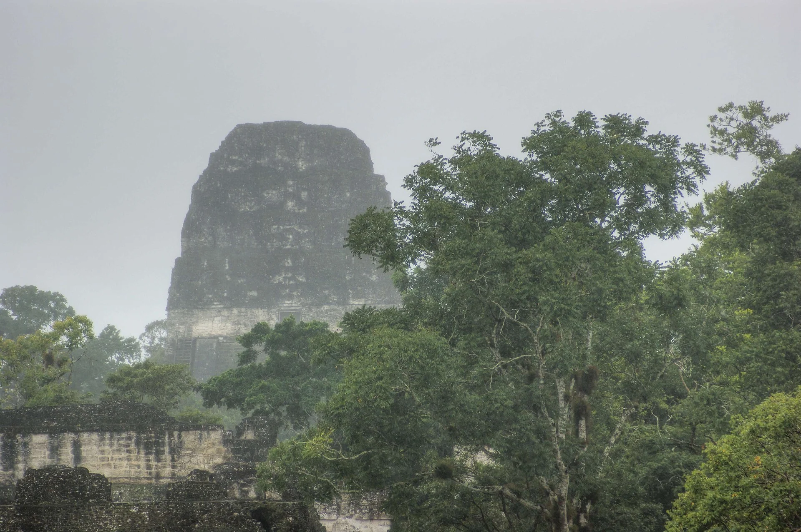

Maya uygarlığı, Mezoamerika'da binlerce yıla yayılan kentleşme, yazı ve siyasi değişim tarihidir. “Mayalar”ı tek bir krallık veya artık var olmayan bir halk gibi anlatmak yanıltıcı olur: tarih boyunca birbirleriyle ilişki kuran çok sayıda kent devleti vardı ve Maya halkları bugün de kendi dilleri ve kültürleriyle yaşamaya devam ediyor.
Maya dünyası nerede ve ne zaman gelişti?
Maya toplulukları tarihsel olarak bugünkü güney Meksika, Guatemala, Belize, Honduras'ın batısı ve El Salvador'un bazı bölgelerine yayılan Mezoamerika'da yaşadı. Arkeologlar dönemi kabaca biçimlere ayırır: Klasik Öncesi dönem (yaklaşık MÖ 2000–MS 250), Klasik dönem (yaklaşık MS 250–900) ve Klasik Sonrası dönem (yaklaşık MS 900'den İspanyol istilasına kadar). Bu sınırlar her bölge için aynı anda başlayıp bitmez; yerel gelişmeler farklılık gösterir.
Maya kentleri, tek merkezden yönetilen bir imparatorluk olarak değil, farklı hanedanların yönettiği ve zaman zaman ittifak ya da rekabet içinde olan siyasi merkezler ağı olarak anlaşılmalı. Tikal, Calakmul, Palenque ve Copán gibi kentler kendi çevrelerinde etkiliydi; güç dengeleri de yüzyıllar içinde değişti.
Kentler, tarım ve yönetim
Maya yerleşimleri tapınaklar, saraylar, meydanlar, evler ve tarım alanlarından oluşan karmaşık çevrelerdi. Kentler arasında nüfus, mimari ve siyasi etki bakımından farklar bulunuyordu. Bazı bölgelerde su yönetimi için rezervuarlar ve farklı tarım yöntemleri kullanıldı; bunlar yerel iklim ve arazi koşullarına uyum sağlama çabalarının parçasıydı.
Anıtlar üzerindeki yazıtlar, hükümdarların adlarını, hanedan bağlarını, siyasi olayları ve tarihleri kaydeder. Bu nedenle yazıtlar önemli tarihsel kanıtlardır; ama çoğu saray ve yönetici çevrelerinin bakışını yansıtır. Gündelik yaşamı anlamak için arkeolojik yerleşimler, seramikler, mezarlar ve başka buluntular da birlikte değerlendirilir.
Yazı, matematik ve takvimler
Maya yazı sistemi, işaretlerin hem sözcükleri hem de heceleri temsil edebildiği bir hiyeroglif yazı geleneğiydi. Yazıtlar taş anıtlar, seramikler ve kodeksler gibi farklı yüzeylerde görülebilir. Günümüzde araştırmacılar bu metinleri okuyarak Maya kentlerinin tarihi ve siyasi ilişkileri hakkında yeni bilgiler elde ediyor.
Maya matematiğinde nokta ve çizgiler sayıları göstermek için kullanılır; sıfır işareti ve basamaklı sayı düzeni büyük değerleri yazmayı mümkün kılar. Takvim kullanımı da tek bir döngüden ibaret değildi: 260 günlük kutsal takvim ve 365 günlük yıl gibi farklı sayımlar bir arada işliyordu. Penn Museum'un açıklamasına göre Uzun Sayım sistemi günleri daha büyük zaman birimleriyle ifade ediyor; 2012'deki bir döngü sonunun “dünyanın sonu” olarak yorumlanması ise Maya takvimlerinin desteklemediği modern bir yanlış anlamaydı.
Klasik dönem kentleri neden değişti?
MS sekizinci ve dokuzuncu yüzyıllarda özellikle güney alçak bölgelerde birçok büyük kentte anıtsal yazıt üretimi ve siyasi faaliyet azaldı; bazı merkezlerin nüfusu geriledi veya yer değiştirdi. Bu değişim bütün Maya bölgelerinde aynı anda gerçekleşmedi. Kuzey Yucatán'daki kentler ve Klasik Sonrası topluluklar farklı yollarla gelişmeye devam etti.
Araştırmalar bazı bölgelerde kuraklık ve yağış değişimlerinin toplumsal baskıları artırmış olabileceğini inceliyor. Ancak iklimi tek başına her kentin dönüşümünü açıklayan evrensel bir neden gibi sunmak doğru değil. Siyasi rekabet, tarım ve su yönetimi, ticaret ağları ve yerel çevresel koşullar farklı yerlerde farklı biçimlerde etkili olmuş olabilir. “Maya uygarlığı çöktü ve yok oldu” yerine, klasik dönemin bazı siyasi merkezlerinin dönüşümünden söz etmek daha isabetlidir.
Mayalar bugün de yaşıyor
Maya tarihini yalnızca antik kalıntılara indirgememek gerekir. Maya halkları bugün Meksika ve Orta Amerika'da yaşamayı sürdürüyor; Maya dilleri, toplulukları ve kültürel pratikleri günümüzün de parçası. Geçmişteki kentleri anlatırken çağdaş Maya halklarını görünmez kılmamak, tarihi daha doğru ve eksiksiz ele almanın bir parçasıdır.
Kaynaklar
- National Museum of the American Indian, Smithsonian. Maya. Günümüz Maya toplulukları ve Maya kültürüne dair müze kaynağı. Maya | National Museum of the American Indian.
- Penn Museum. Maya Calendars: An Overview. Maya takvimleri ve sayı sistemi hakkında müze açıklaması. Penn Museum.
- UNESCO World Heritage Centre. Tikal National Park. Tikal'in arkeolojik ve doğal mirasına dair alan kaydı. UNESCO Dünya Mirası.
- Kennett, D. J. et al. (2012). “Development and Disintegration of Maya Political Systems in Response to Climate Change.” Science, 338(6108), 788–791. İklim göstergelerini Maya siyasi değişimleriyle birlikte inceleyen hakemli araştırma. doi:10.1126/science.1226299.
- MongeNajera. Tikal Guatemala 12 (Tikal Tapınağı V fotoğrafı). Wikimedia Commons kayıt sayfası, CC BY-SA 3.0.
Dönem tarihleri yaklaşık ve bölgelere göre değişkendir. İklim araştırmaları geçmiş çevresel koşullarla siyasi değişimler arasındaki ilişkiyi inceler; tek bir nedenin bütün Maya kentlerini aynı biçimde etkilediğini göstermez. Kaynaklar 8 Kasım 2026 tarihinde kontrol edildi.